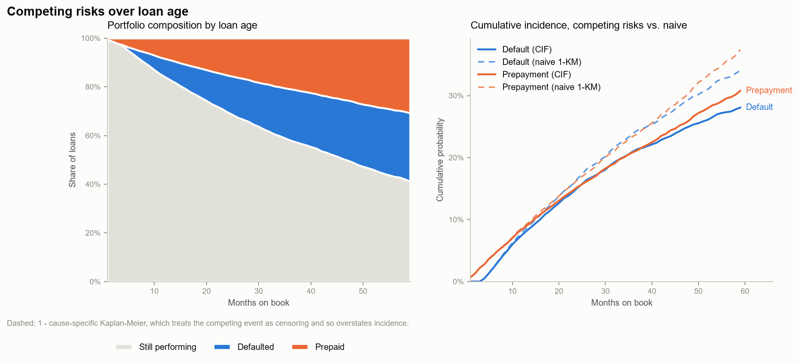
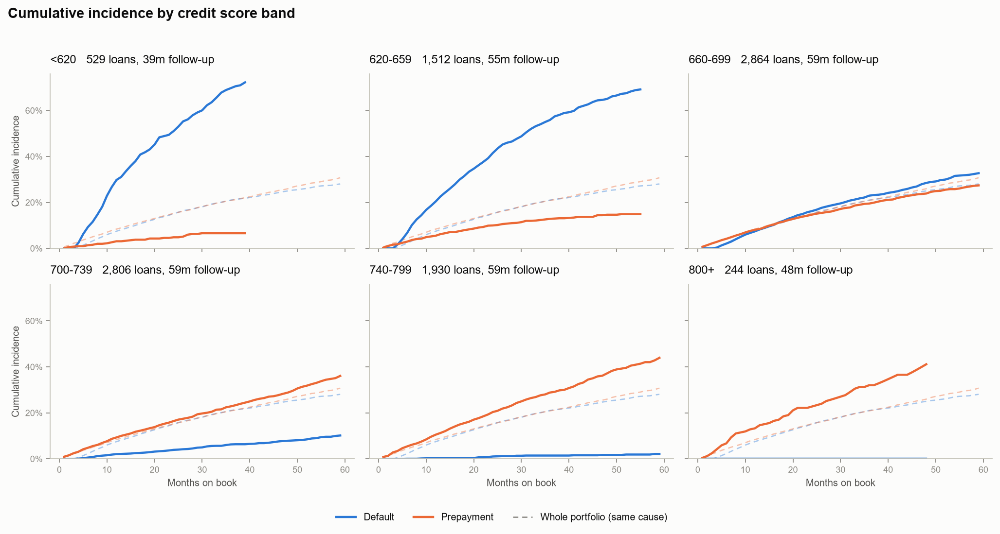
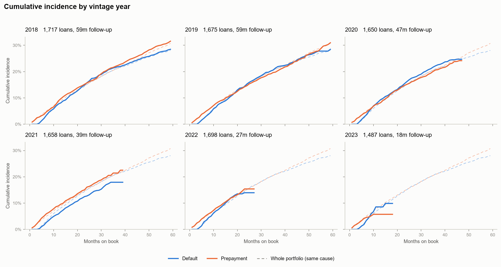
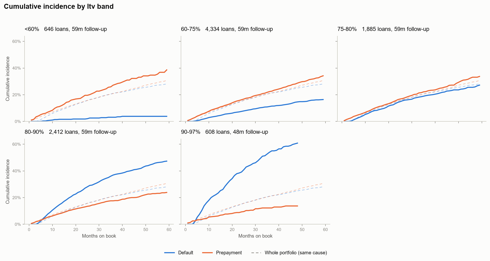
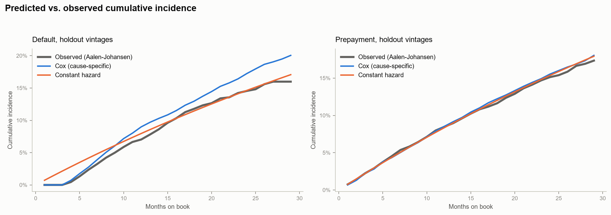
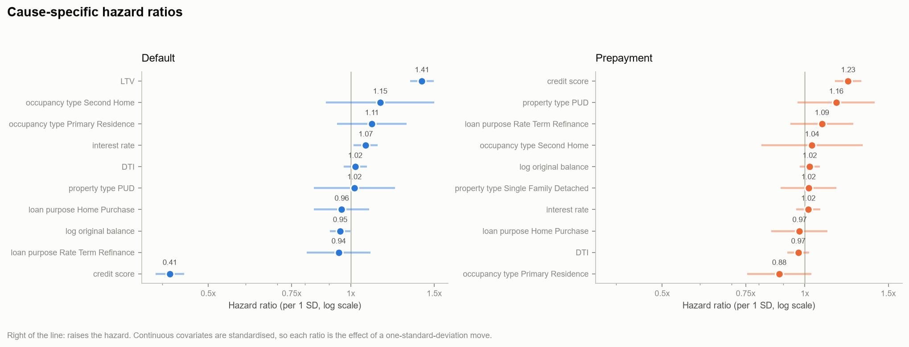
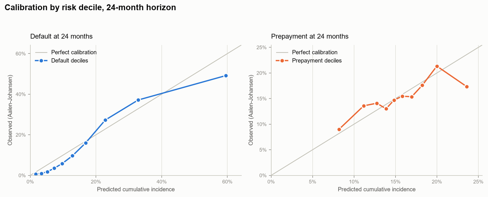

Generated 2026-08-30 14:35:58
Time to default and time to prepayment, as competing risks, on a clock measured in months on book rather than calendar months. Two loans originated four years apart are compared at the same age, which is what stops a young vintage from looking safe merely because it has not had time to fail yet.
Models are fitted on vintages originated up to 2021-06 (5,896 loans) and evaluated on later vintages (3,989 loans) that the model has never seen. Splitting on origination rather than reporting month keeps each loan's history intact -- a duration model cannot represent half a loan -- while still guaranteeing the holdout is strictly forward in time.
Every loan ends in exactly one of these states at the observation cutoff.
| outcome | loans | share |
|---|---|---|
| censored | 6072 | 0.614264 |
| prepaid | 1965 | 0.198786 |
| default | 1848 | 0.18695 |
Every count the transformation from panel to duration data produced.
| metric | value |
|---|---|
| loans | 9885 |
| observation_cutoff | 2023-12 |
| events_default | 1848 |
| events_prepaid | 1965 |
| censored_total | 6072 |
| censored_administrative | 5348 |
| censored_lost_to_followup | 724 |
| left_truncated_loans | 0 |
| left_truncation_enabled | True |
| calendar_vs_age_order_anomalies | 1528 |
| zombie_rows_dropped | 1319 |
| zombie_loans_affected | 664 |
| degenerate_events_given_one_month | 0 |
| degenerate_censored_dropped | 115 |
| total_exposure_months | 260064.0 |
| median_follow_up_months | 23.0 |
| censoring_rate | 0.6142640364188164 |
A survival model is defined by what it does with the loans that did not have an event. This pipeline treats them in four distinct ways, and the counts behind each are in the censoring table above.
1. Right-censoring at the observation cutoff (administrative).
Most loans in the book are still performing when the panel ends. They are not
"no default" observations -- they are "no default yet", and the difference is
the whole subject. Each contributes its full exposure (exit_month - entry_month)
to every risk set it survives through, and contributes no event. Dropping them
would be catastrophic: only resolved loans would remain, and 1,848 of the 3,813
resolved loans defaulted, so the "default rate" would read 48% against the
36-month Aalen-Johansen estimate of 21%. Administrative censoring is non-informative by construction -- the
cutoff date has nothing to do with any individual loan's risk -- which is the
condition Kaplan-Meier, Aalen-Johansen and Cox all require.
2. Right-censoring before the cutoff (loss to follow-up). A smaller group stops being reported before the cutoff. These are handled identically in the arithmetic, but counted separately in the report, because they are the ones that could break the non-informative assumption: if loans disappear from the feed because they are deteriorating, every estimate here is optimistic. The rate is reported so a reviewer can judge that risk rather than take it on trust.
3. Prepayment as a competing risk, not as censoring.
A prepaid loan has left the portfolio and can never default. Treating it as
censored asserts that it might still default at some unobserved future time,
which inflates default incidence -- on this pack, 1 - KM puts 36-month default
at 23.9% against the Aalen-Johansen estimate of 21.0%, a 2.9pp overstatement
from that assumption alone. Cause-specific hazards are estimated with the
competing event censored (correct for a hazard), and cumulative incidence is
then rebuilt with the Aalen-Johansen weighting (correct for a probability).
Both are reported side by side.
4. Left truncation (delayed entry).
A loan first observed at month 10 is only in the sample because it survived to
month 10; counting it in the risk set from month 0 would understate early
hazards. Every estimator here takes an entry argument and builds its risk set
as {entry < t <= exit}. On this pack no loan is genuinely truncated -- every
loan has a month-0 row -- but 1,528 loans have a calendar-first row at a later
age because their month-0 row carries a corrupted reporting_month (the Phase 1
"Time Travel" defect). Reading entry off calendar order would manufacture
1,528 left-truncated loans out of a data defect, so durations are taken on the
loan-age axis throughout and the disagreement between the two orderings is
counted rather than absorbed.
A fifth case that is not censoring at all: zombie rows.
Default and Prepaid are absorbing states. Where an active row appears after
one, it is the Phase 1 "Zombie Loan" defect, not a recovery. The outcome is
therefore read from the earliest absorbing row by loan age and later rows are
discarded. Reading the last row instead -- the obvious groupby().last() --
reclassifies 664 resolved loans in this pack as still active, which would move
them from the event count into the censored count and bias every curve downward.
Occurrence over exposure -- one monthly hazard per cause, no covariates. Censored loans contribute exposure to the denominator, which is why they cannot be dropped.
| cause | events | exposure_months | monthly_hazard | annualised_rate |
|---|---|---|---|---|
| default | 1482 | 204599 | 0.00724344 | 0.0835407 |
| prepaid | 1557 | 204599 | 0.00761001 | 0.0875932 |
Aalen-Johansen competing-risk estimates, with the naive 1 - KM alongside. The gap between the two columns is the cost of treating the competing event as censoring.
| cause | months_on_book | cif_aalen_johansen | naive_1_minus_km | overstatement_pp |
|---|---|---|---|---|
| default | 12 | 0.0747768 | 0.0788233 | 0.40465 |
| default | 24 | 0.15121 | 0.165966 | 1.47559 |
| default | 36 | 0.210194 | 0.239432 | 2.92384 |
| default | 48 | 0.250164 | 0.294193 | 4.40288 |
| prepaid | 12 | 0.083944 | 0.086161 | 0.221696 |
| prepaid | 24 | 0.152579 | 0.164099 | 1.152 |
| prepaid | 36 | 0.208834 | 0.234561 | 2.57267 |
| prepaid | 48 | 0.259774 | 0.303826 | 4.40522 |
Concordance is Harrell's C on the holdout; Brier scores are IPCW-weighted, with the censoring distribution estimated on train. The constant-hazard model scores C = 0.5 by construction -- it has no covariates -- so the comparison that matters for it is the Brier column.
| cause | model | concordance | integrated_brier | brier_12m | brier_24m | brier_36m |
|---|---|---|---|---|---|---|
| default | constant_hazard | 0.5 | 0.0645763 | 0.0527666 | 0.0728258 | 0.059887 |
| default | kaplan_meier | 0.5 | 0.084517 | 0.0569623 | 0.0933802 | 0.0943454 |
| default | cox | 0.822436 | 0.0440103 | 0.0465355 | 0.0490936 | 0.0313185 |
| prepaid | constant_hazard | 0.5 | 0.0706927 | 0.0647126 | 0.0773332 | 0.0633919 |
| prepaid | kaplan_meier | 0.5 | 0.094694 | 0.0714519 | 0.101689 | 0.103947 |
| prepaid | cox | 0.558084 | 0.0702642 | 0.0643381 | 0.0767043 | 0.06331 |
Per one standard deviation for continuous covariates. Above 1 raises the hazard.
| cause | covariate | hazard_ratio | hr_lower_95 | hr_upper_95 | z | p_value |
|---|---|---|---|---|---|---|
| default | ltv | 1.4124 | 1.33332 | 1.49616 | 11.7463 | 7.37683e-32 |
| default | occupancy_type_Second_Home | 1.15279 | 0.886252 | 1.49949 | 1.05986 | 0.289209 |
| default | occupancy_type_Primary_Residence | 1.10691 | 0.934577 | 1.31103 | 1.17637 | 0.239447 |
| default | interest_rate | 1.07457 | 1.01408 | 1.13866 | 2.43305 | 0.0149722 |
| default | dti | 1.02123 | 0.965179 | 1.08053 | 0.729342 | 0.465793 |
| default | property_type_PUD | 1.0173 | 0.835569 | 1.23855 | 0.170798 | 0.864383 |
| default | property_type_Single_Family_Detached | 1.01084 | 0.880467 | 1.16051 | 0.152977 | 0.878416 |
| default | original_term_months | 1.0073 | 0.958257 | 1.05885 | 0.28551 | 0.775253 |
| default | loan_purpose_Home_Purchase | 0.956403 | 0.836283 | 1.09378 | -0.650958 | 0.515073 |
| default | log_original_balance | 0.949045 | 0.902563 | 0.997921 | -2.04118 | 0.0412328 |
| default | loan_purpose_Rate_Term_Refinance | 0.942341 | 0.806425 | 1.10116 | -0.74731 | 0.454876 |
| default | credit_score | 0.414765 | 0.386981 | 0.444544 | -24.8768 | 1.32638e-136 |
| prepaid | credit_score | 1.23364 | 1.15735 | 1.31495 | 6.44695 | 1.14121e-10 |
| prepaid | property_type_PUD | 1.16453 | 0.965366 | 1.40479 | 1.59164 | 0.111464 |
| prepaid | loan_purpose_Rate_Term_Refinance | 1.08609 | 0.932267 | 1.2653 | 1.05986 | 0.289208 |
| prepaid | occupancy_type_Second_Home | 1.03518 | 0.809873 | 1.32317 | 0.276089 | 0.78248 |
| prepaid | log_original_balance | 1.02349 | 0.974639 | 1.07478 | 0.930427 | 0.35215 |
| prepaid | property_type_Single_Family_Detached | 1.01779 | 0.889497 | 1.16459 | 0.256551 | 0.797526 |
| prepaid | interest_rate | 1.01658 | 0.959223 | 1.07736 | 0.554878 | 0.578978 |
| prepaid | ltv | 1.00553 | 0.951813 | 1.06228 | 0.196877 | 0.843923 |
| prepaid | original_term_months | 0.986611 | 0.939762 | 1.0358 | -0.543042 | 0.587101 |
| prepaid | loan_purpose_Home_Purchase | 0.974394 | 0.850133 | 1.11682 | -0.372679 | 0.709388 |
| prepaid | dti | 0.968381 | 0.917459 | 1.02213 | -1.1658 | 0.243697 |
| prepaid | occupancy_type_Primary_Residence | 0.882906 | 0.755923 | 1.03122 | -1.57192 | 0.11597 |
Schoenfeld residual test. A small p-value means that covariate's hazard ratio is not constant over loan age -- reported rather than corrected, because it is the assumption the Cox model rests on and it belongs in the model card.
| cause | error |
|---|---|
| default | Residuals for entries not implemented. |
| prepaid | Residuals for entries not implemented. |
Predicted cumulative incidence against the Aalen-Johansen estimate computed inside each decile, so censoring is respected on both sides of the comparison.
| cause | horizon_months | decile | loans | mean_predicted | observed_cif | gap |
|---|---|---|---|---|---|---|
| default | 24 | 1 | 399 | 0.01695 | 0.00593163 | 0.0110184 |
| default | 24 | 2 | 399 | 0.0343224 | 0.00988409 | 0.0244383 |
| default | 24 | 3 | 399 | 0.0522807 | 0.018091 | 0.0341897 |
| default | 24 | 4 | 399 | 0.0730693 | 0.0353938 | 0.0376755 |
| default | 24 | 5 | 399 | 0.0974495 | 0.0585393 | 0.0389102 |
| default | 24 | 6 | 398 | 0.128452 | 0.0965706 | 0.0318809 |
| default | 24 | 7 | 399 | 0.16883 | 0.160366 | 0.00846407 |
| default | 24 | 8 | 399 | 0.228244 | 0.272655 | -0.0444106 |
| default | 24 | 9 | 399 | 0.328507 | 0.371439 | -0.0429322 |
| default | 24 | 10 | 399 | 0.595273 | 0.491718 | 0.103554 |
| prepaid | 24 | 1 | 399 | 0.081852 | 0.0899043 | -0.00805226 |
| prepaid | 24 | 2 | 399 | 0.111733 | 0.135875 | -0.0241422 |
| prepaid | 24 | 3 | 399 | 0.127499 | 0.140947 | -0.0134483 |
| prepaid | 24 | 4 | 399 | 0.138639 | 0.130061 | 0.00857845 |
| prepaid | 24 | 5 | 399 | 0.148241 | 0.146977 | 0.00126362 |
| prepaid | 24 | 6 | 398 | 0.158115 | 0.154546 | 0.00356883 |
| prepaid | 24 | 7 | 399 | 0.169647 | 0.153654 | 0.0159937 |
| prepaid | 24 | 8 | 399 | 0.182391 | 0.176108 | 0.00628252 |
| prepaid | 24 | 9 | 399 | 0.199923 | 0.213357 | -0.0134339 |
| prepaid | 24 | 10 | 399 | 0.235943 | 0.173375 | 0.062568 |
Competing risks over loan age

Cumulative incidence by credit score band

Cumulative incidence by vintage year

Cumulative incidence by ltv band

Predicted vs observed on the holdout

Cause-specific hazard ratios

Calibration by risk decile
